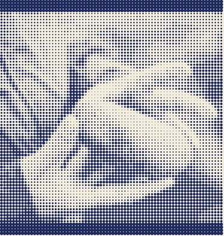

no warning · no cover
Jacob
at Bethel
From-My-
Brother Tour
Beersheba to Haran · approx. 500 miles · on foot · unaccompanied
Asleep on a rock
Attendance: one
Luz
Bethel
- SunsetHe stops walking. Not because he arrived — because the light went.
- Takes a stone from the ground. Uses it as a pillow.
- NightA stairway, earth to sky. Traffic moving in both directions.
- A voice, unprompted, unearned: “I am with you.”
- DawnHe wakes up afraid. Says the line this whole paper is named after.
- Stands the pillow on its end. Pours oil on it. Renames the town.

Leave the light on, everybody: a man left home in a hurry because his brother wanted him dead, walked until the sun quit on him, and stopped in open country because he had run out of daylight, not because he had arrived. He used a rock for a pillow. Nobody was told. Nobody sold a ticket. What happened next got the place renamed and is printed in full, starting on the very next page. Doors were never opened. Anything can happen.
- Stairs
- Angels
- Dirt
- Real estate
- Sleep
- Stones
- Family you are avoiding
- Descendants
- All four directions
- Bread
- Clothing
- Coming home
- Fear
- Oil
- Renaming things
- Promises
- Being watched
- Waking up
Come as you are, which in his case was filthy and afraid. Sleep badly. Miss the whole thing at the time. Work it out in the morning. Could be the best night of your life.
For internal use · Bethel checklist: check all that apply
A bush that would not stop burning.
Exodus 3Heard his name. Thought it was the old man.
1 Samuel 3Hungry. Fell into a trance around noon.
Acts 10Was on his way to do something else entirely.
Acts 9Two cellmates. Two dreams. One long wait.
Genesis 40Type: Between Sundays
Place of residence: your wall, a fridge, or the seat behind you.
Most people find out later. If you have had a night like this one, put your name on it.
starts overleaf Pages 07–14 · no ads